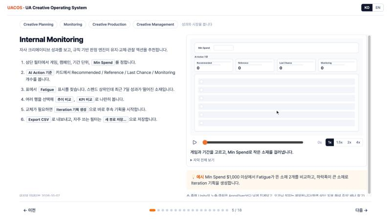

회사 제품 3개, 대외 공모전·해커톤 프로젝트의 지식그래프·데모 영상·제출 문서 모음. 지식그래프는 graphify로 코드(구문 분석)와 설계·운영 문서(의미 추출)를 노드·엣지로 구성하고 커뮤니티 탐지까지 수행 — 박선미 · AX 엔지니어
UACOS
사내 AI JAM 1·2등 제품 통합UA 크리에이티브 운영 시스템 · 2026.02~현재
모바일 게임 광고 소재의 성과 모니터링부터 경쟁사 분석 → 리서치 → 기획 → 제작 → 승인까지 한 흐름으로 잇는 사내 웹 애플리케이션. 사내 AI JAM 1·2등 제품 SceneStealer(제작)·ViTag(분석) 통합, Claude Code가 구현하고 사람은 디렉터로서 승인
- 사용자서울 UAC팀 10명 → 3개국 4개 팀 약 40명 (한국어 지원 → 전체 영문화·영문 온보딩)
- 성과월간 리포트 3일 → 2분 · 경쟁사 리서치 5일 → 3분 · 설치 누락 보정 +40.8%
- 역할PM, 백엔드, 데이터 설계
지식그래프 노드 1,030 · 엣지 1,477 · 커뮤니티 72 — 최다 연결 문서는 용어집, 설계 문서 전반이 같은 용어 정의로 연결된 구조 확인

사용 가이드 열기
ViTag
사내 AI JAM 2등 → 정식 제품광고 영상 자동 태깅 · 2024.09~2026.02
광고 영상의 캐릭터·효과음·연출·감정 태그를 LLM으로 자동 추출하고, 태그별 성과·트렌드·연관 관계를 분석하는 사내 웹 애플리케이션. 사내 AI JAM 출품작(PixelPulse)에서 출발해 정식 제품으로 출시, 이후 운영 중인 제품에 AI 에이전트 작업 규칙 적용
- 성과영상 1건 분석 1일 → 45초 · 기획부터 출시까지 60일 → 20일 · 태그 1,757건 논리 위반 0건
- 역할PO·기획, 데이터 사이언티스트, 프론트엔드
지식그래프 노드 1,314 · 엣지 2,275 · 커뮤니티 140 — 코드와 배포 설정에 흩어진 '설정만 있고 쓰이지 않는 항목' 일괄 탐지
SceneStealer
사내 AI JAM 1등 → 정식 제품광고 영상 재구성·에셋 추출 · 2025.10~2026.02
경쟁작 광고 영상을 장면 단위로 분할하고, 장면별 AI 분석 설명을 프롬프트로 변환해 영상 생성 모델로 재생성하는 사내 웹 도구. 화면 속 게임 에셋은 투명 PNG로 추출. 정식 제품으로 전사 오픈 후 UACOS에 통합
- 성과실사 영상 제작 기간 40일 → 1일 · 30초 광고 제작 예산 4,200USD → 4USD
- 역할에셋 추출, 프롬프트 설계, 웹 구현
지식그래프 노드 937 · 엣지 1,824 · 커뮤니티 59 — 기획 문서와 코드 사이의 연결 공백 발견, 스펙마다 구현 파일을 명시하는 방식으로 개선
FestaCast
한국관광공사 프롬프톤 우수상(사장상)1인 참가
축제 개최 전에 흥행 가능성을 진단하는 7노드 Phase Gate 멀티에이전트. 지역 코드 조회만 Opus, 나머지 6노드는 Haiku로 진단 1건 $0.6. 이 주제가 FestaOn 지정과제로 채택
 PDF 열기
PDF 열기
Debut Loop!
NHN×AI 해커톤 예선 입상588팀 중 상위 10팀
스와이프 × 로그라이크 아이돌 육성 모바일 게임. 개발 1명(본인)·디자이너 2명이 3주간 제작, 이미지·영상·사운드 에셋 전량을 생성 AI로 제작
- 성과NHN×AI 해커톤 예선 588팀 중 상위 10팀 · 생성 에셋 395개(GPT·Nano Banana·Seedance·Kling·Suno)
- 역할개발 전담, AI 에이전트가 구현하고 사람은 승인·검증하는 작업 구조 설계
지식그래프 노드 1,108 · 엣지 2,910 · 커뮤니티 47 — 게임 기능 다수가 화면 표시 함수 하나(1,460줄)에 몰린 구조 발견, 개발자가 꼽은 1순위 분리 대상과 일치
Red Horse Rescue 2026
NHN×AI 해커톤 본선35시간 제작
주제어 '2026', 키워드 '물리법칙·수집'으로 35시간 동안 만든 웹·안드로이드 육각형 슈터 게임. 3인 팀, 설계 → 계획 → 서브에이전트 구현 순서를 스킬로 고정해 주제 공개 당일 밤 코어 완성
- 성과NHN×AI 해커톤 본선 출품 · 발사체 소실 버그 132건 재현 → 0건 · 아트 422개 코드 변경 없이 반영
- 역할개발, AI 에이전트 작업 규칙·테스트 설계
지식그래프 노드 1,313 · 엣지 3,436 · 커뮤니티 50 — 게임 주요 기능 20곳이 자동 테스트로 검증되는 구조 확인
TravelZip (여행집)
관광데이터 공모전 웹·앱 개발예선 통과
전국 관광지·축제 데이터로 AI가 여행 코스 3안을 제안하고, 실시간 혼잡도나 일정 변경 시 영향받는 부분만 다시 계획하는 여행 가이드 웹·앱. 3인 팀, 약 3개월
- 성과관광데이터 공모전 웹·앱 개발 부문 예선 통과 · 문장 이해는 Claude(4개 기능), 수치 계산·결정은 규칙 엔진, 모든 AI 기능에 폴백
- 역할기획, 프론트엔드 웹
지식그래프 노드 13,425 · 엣지 36,331 · 커뮤니티 374 — 수백 개 API가 하나의 공통 오류·응답 규칙을 따르는 구조 확인 (커뮤니티 요약 보기)
FestaOn (페스타온)
관광데이터 공모전 웹·앱 구현프롬프톤 우수상 주제 고도화
FestaCast 주제가 공모전 지정과제로 채택되어 3인 팀으로 만든 축제 운영 웹·앱. 개최 전 흥행 진단 → 스탬프 투어·지역화폐 교환권으로 방문객 분산 → 개최 후 예측 대비 실적 비교
- 성과관광데이터 공모전 웹·앱 구현 부문 제출 · 실측 데이터 기반 수요 예측 모델 적용, 예측 R² 0.82(직전 회차 기준)
- 역할원 과제 제작자, 고도화 기획, 프론트엔드 웹
지식그래프 노드 12,458 · 엣지 32,917 · 커뮤니티 386 — 교환권·어뷰즈 방지 모듈 사이의 순환 참조 발견, 다음 정리 대상으로 확정 (커뮤니티 요약 보기)
그래프와 대외 프로젝트 제출 문서만 공개(소스 코드 비공개) · 회사 프로젝트의 사내 인프라 식별자(스토리지 버킷·내부 도메인·권한 역할·티켓 번호)는 공개본에서 일반 표기로 변경 · 노드 5,000개 초과 그래프는 커뮤니티 단위 요약 보기로 표시 · 그래프 화면은 온라인에서만 열림(시각화 라이브러리 CDN 로드) · 빌드 2026-10-09 · github.com/Sunmi-Park-private